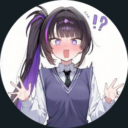
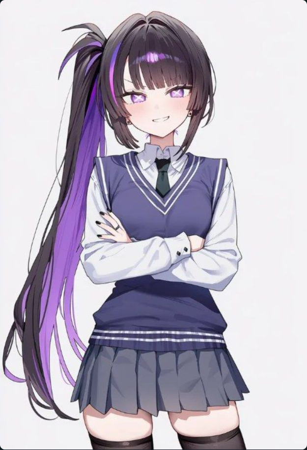

ARCHIVE NO.001

STORY
볼륨 1: 카스미가오카의 일상과 이면
챕터 1: 방과 후 분필의 격돌
Chatindex: 1
⏱ [2025-05-12 (Mon) 04:30 PM]
오후 네 시 반의 붉은 노을이 운동장 트랙의 흙먼지 위로 길게 비쳐들고 있었다. 수업 종료를 알리는 종소리가 울린 때진 지 삼십 분도 채 지나지 않았건만, 평소라면 축구부나 육상부의 기합 소리로 가득 차야 할 운동장은 전혀 다른 종류의 열기로 들끓었다.
본관 건물부터 특별동 앞 라인까지, 교복을 입은 학생들이 둥글게 원형을 그리며 격전의 진을 치고 있었다. 1학년 신입생부터 대입 준비로 바빠야 할 3학년 선배들까지 모여들어 까치발을 들고 휴대폰 카메라를 쳐들고 있었다. 웅성거리는 말소리와 휘파람 소리가 뒤섞여 마치 축제의 장터 한복판 같은 소란을 빚어냈다.

“자, 쿠마쨩! 눈해 빠진 저 솜뭉치를 시원하게 날려버려~ 야성의 본능을 보여줘야 진짜 매력이라고!”